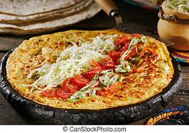
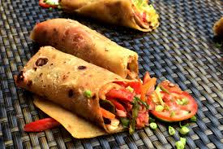

Home
Rolex


Directions
First, make your way to Uganda;-)
- A mug or cup must be used to mix the ingredients together.
- Mix two or more eggs in the cup to make an egg mixture
- Cut 1 onion, 1 tomato, slice quarter of a cabbage
- Add the above ingredients in the egg mixture
- Add a pinch of salt as well in the egg mixture and stir
- the egg mixture must be poured onto a hot, well-oiled pan and spread out with a spoon to spread the mixture.
- Once the first side is cooked, flip the eggs over. They should be lightly browned.
- The bottom side will brown less – but you’ll be able to see those pretty ingredients…
- While the eggs are still in the pan, top them with a large chapati. The steam coming off the eggs will soften the chapati.
- Then you can remove them. Make sure the chapati is at the bottom, so as to roll the egg in the chapati
- Then Serve
This Special Dish is the Ugandan Taco. Its usually served on the streets as a snack